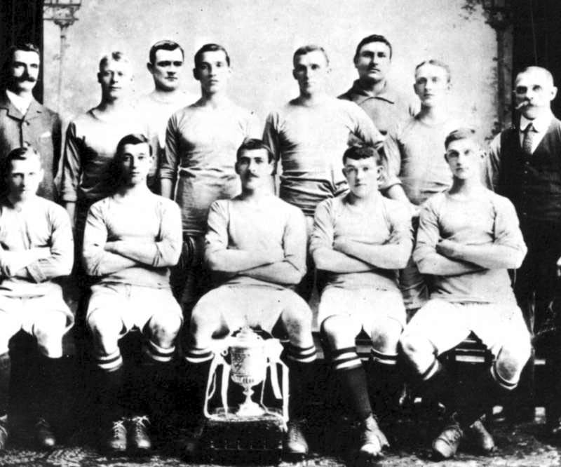

Historia
Manchester City Football Club – angielski klub piłkarski z siedzibą w Manchesterze. W sezonie 2022/2023 występuje w Premier League.Klub powstał w 1880 roku jako Saint Marks (West Gorton), w 1887 został przemianowany na Ardwick AFC, a obecną nazwę nosi od 1894. Zdobył siedem tytułów Mistrza Anglii, sześć razy wygrał Puchar Anglii, osiem razy – Puchar Ligi Angielskiej, a raz – Puchar Zdobywców Pucharów. Największe sukcesy osiągnął w latach 60. i 70. XX wieku, pod kierunkiem trenerów Joe Mercera i Malcolma Allisona mających do dyspozycji między innymi takich piłkarzy jak Colin Bell i Francis Lee.W latach 90. zespół dwukrotnie spadł – najpierw z Premier League, następnie z Division One. Od 2002 roku nieprzerwanie występuje w najwyższej klasie rozgrywkowej.
Barwy Citizens to błękit i biel. Tradycyjne stroje wyjazdowe były albo kasztanowe, albo (od lat 60.) czerwono-czarne, w ostatnich latach jednak w użyciu są także inne kolory. W sezonie 2004/2005 zespół nosił białe koszulki, fioletowe spodenki i białe getry, zaś w następnym stroje wyjazdowe były już w całości granatowe. Natomiast w sezonie 2006/2007 stroje były czarne z szarym paskiem. W starciach na wyjeździe z zespołami z Premiership, których stroje podstawowe były ciemnoniebieskie, City najczęściej występowało w trzecim komplecie, na który składały się żółta koszulka oraz czarne spodenki i getry. W jednym z programów meczowych próbowano usprawiedliwiać ten wybór, tłumacząc, że żółty kolor nawiązuje do barw strojów z lat 50. i 60. W rzeczywistości jednak kolor ten był bursztynowy z kasztanowym paskiem i używano go bardzo rzadko. Od sezonu 2007/2008 białe paski pojawiły się zarówno na koszulkach wyjazdowych (fioletowe z białymi paskami), jak i domowych (błękitne z białymi paskami). Do dyspozycji zespół ma też trzeci zestaw – białe koszulki z poprzecznym błękitnym paskiem, błękitne spodenki i białe getry. Nie jest jasne dlaczego klub gra w takim zestawie kolorów, są jednak dowody, że błękit jest kolorem Manchesteru co najmniej od 1892 roku. Według jednej z plotek przywiązanie do tego koloru jest łączone z ruchem wolnomularskim. Według broszury zatytułowanej Famous Football Clubs – Manchester City, opublikowanej w 1940 roku zespół pierwotnie, jeszcze jako West Gorton (St. Marks) nosił szkarłat i czerń. Według relacji datowanych na rok 1884 zawodnicy nosili czarne koszulki z białym krzyżem, podkreślające chrześcijańskie korzenie klubu. Pomysł na czerwono-czarne stroje wyjazdowe wyszedł od ówczesnego asystenta menedżera Malcolma Allisona, który twierdził, że użycie barw A.C. Milan natchnie zespół do zwycięstw.
Obecny herb został ustanowiony jako oficjalny w 1997 roku, ponieważ wcześniejszy emblemat nie mógł zostać zarejestrowany jako znak towarowy. Jest on wzorowany na herbie miasta Manchester i składa się z tarczy na tle złotego orła. Na tarczy widnieje statek, reprezentujący Kanał Manchesterski oraz, w dolnej części, trzy ukośne linie, symbolizujące trzy rzeki, które płyną przez miasto. Na dole herbu widnieje dewiza z łacińską sentencją Superbia in Praelia („dumni w walce”). Nad orłem znajdują się trzy gwiazdy, będące motywem czysto dekoracyjnym. W przeszłości City miało dwa inne herby. Pierwszy, zaprezentowany w 1970 roku, bazował na wzorze używanym w oficjalnych korespondencjach klubu od późnych lat 60. Herb ten był okrągły, na obwodzie znajdowała się nazwa klubu, w środku zaś tarcza, identyczna z tą używaną współcześnie. Emblemat ten został zastąpiony w roku 1972 w wersję, w której górną część tarczy zastąpiono czerwoną różą z Lancashire. W wypadku występów w finałach ważnych imprez klub nie używa oficjalnego loga zespołu, zastępując je herbem miasta, co ma podkreślić dumę z reprezentowania Manchesteru. Ta tradycja pochodzi z czasów, gdy na koszulkach nie było herbu, jednak przetrwała do czasów współczesnych.
Obecnym stadionem zespołu jest Etihad Stadium, nowoczesny 48-tysięcznik, usytuowany we wschodnim Manchesterze. Jest on własnością miasta, na stałe wynajmowaną przez City. Zespół przeniósł się na ten obiekt po zakończeniu sezonu 2002/2003, opuszczając Maine Road. Wcześniej stadion nazywał się City of Manchester Stadium, jednak w lipcu 2011 nazwa stadionu została sprzedana sponsorowi Obywateli, emirackim liniom lotniczym Etihad Airways. Przed przeprowadzką City zainwestowało w obiekt około 35 milionów funtów, dzięki czemu obniżono płytę boiska pod poziom gruntu, dodano nowy rząd siedzeń oraz wybudowano trybunę północną. Meczem inauguracyjnym było spotkanie z FC Barceloną, zakończone zwycięstwem 2:1. Pierwszym strzelcem gola na nowym obiekcie był Nicolas Anelka. W przeszłości Manchester City występował na wielu innych boiskach. W latach 1880–1887, po występach na pięciu różnych obiektach klub w końcu osiadł na Hyde Road, gdzie grał przez 36 lat. Po pożarze, który zniszczył główną trybunę w roku 1920 zaczęto rozglądać się za nowym stadionem. W 1923 klub przeniósł się na Maine Road, nazywanym przez projektantów „Wembley Północy”. Stadion ten mógł pomieścić 84 tysięcy ludzi i był świadkiem najwyższej frekwencji w historii meczów drużyn klubowych w Anglii, kiedy to 84 569 kibiców oglądało zwycięstwo ze Stoke City w ramach Pucharu Anglii. Maine Road było kilkukrotnie rozbudowywane w ciągu 80 lat, jednak w 1995 jego pojemność została ograniczona do 32 tysięcy co zmusiło zespół do przeprowadzki na City of Manchester Stadium. Pojemność nowego stadionu to 47 726 co plasuje obiekt na piątym miejscy w Premier League.